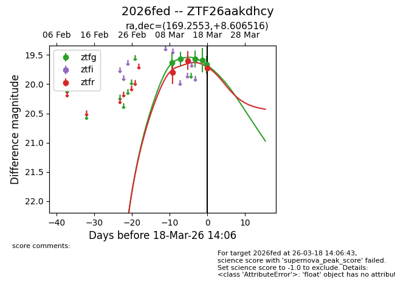
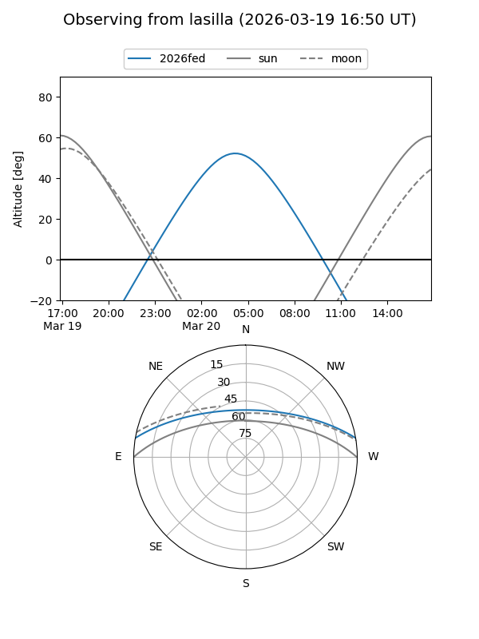
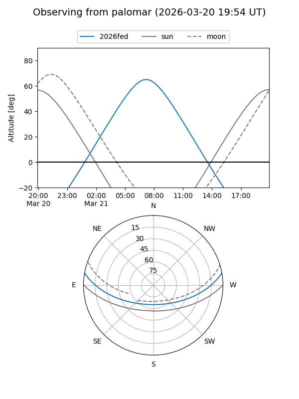
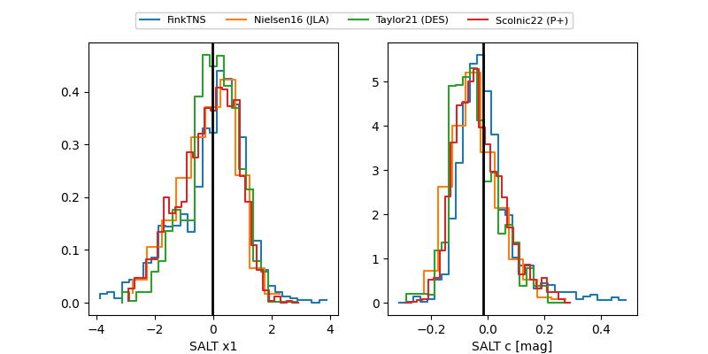

2026fed
Target 2026fed at 2026-03-18 14:08
Aliases and brokers:
FINK: link
Lasair: link
ALeRCE: link
TNS: link
YSE: link
alt names
ZTF26aakdhcy (ztf,fink_ztf)
2026fed (tns,yse)
Coordinates:
equatorial (ra, dec) = 169.2553,+8.60652
equatorial (HMS+DMS) = 11:17:01.28,+08:36:23.46
galactic (l, b) = (248.1959,+60.99527)
Flags:
Photometry:
last ztfg=19.67, ztfr=19.73
5 ztfg, 3 ztfr detections
Lightcurve

Visibility


Additional plots
